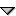
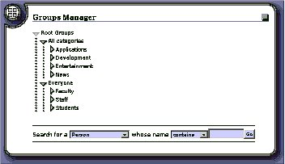
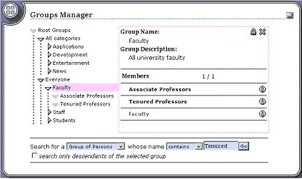
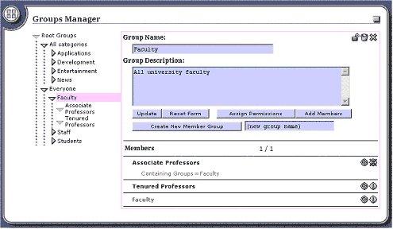
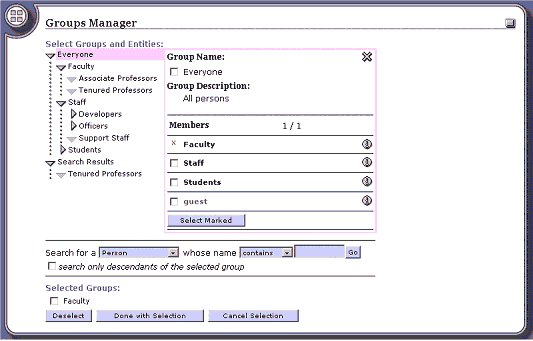
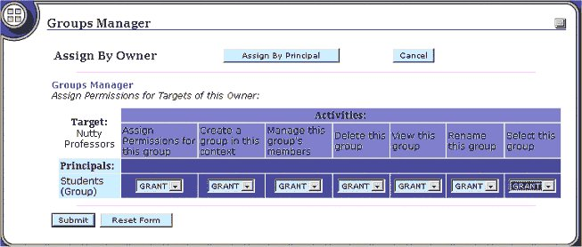
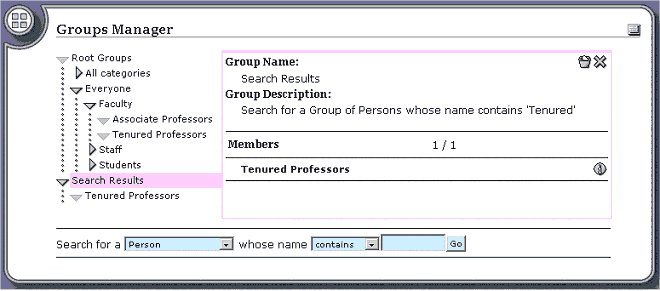

The Groups Manager Channel
The Groups Manager channel is a tool that runs within the uPortal framework that allows a user to manipulate groups, group memberships, and their permissions.
The uPortal 2.1 group service is a composite service made up of one or more component services. Each group service functions to represent group information in a consistent manner. The default implementation is delivered with a group service that uses the portal database as its source. Therefore, as delivered, the composite group service only has one component service that is called "local" A demo LDAP component service can be configured by uncommeting the ldap section in the property file compositeGroupServices.xml located in the /properties/group directory. This will setup an "ldap" service that uses the Columbia LDAP directory as its source. If you want to use another LDAP directory, you should modify the LDAPGroupStoreConfig.xml file located in the same file directory. It should also be kept in mind that group information from some services may be read-only. For a more detailed discussion of configuration issues, refer to the Groups documentation.
The groups framework represents a network of groups. A group can be a member of zero or more groups. The group members have privileges assigned to them directly or by virtue of their membership in a containing group (i.e. inherited from the hierarchy of group memberships). As such, the framework allows for multi-inheritance. This is important to realize while using the Groups Manager channel because the question soon arises where one starts the representation of the groups system. The uPortal 2.1 group service allows for the definition of special groups called root groups. A root group is a special group that is the parent of all groups of a specific entity type. Although the groups framework does not enforce this relationship, the groups manager channel requires root groups to organize the opening view. Root groups are also used by the search function to discover the entity types that can be searched. In the default implementation, the "All categories" group (see Figure 1) is the root group of all channel definition groups and the "Everyone" group is the root group of all IPerson groups. Root groups are defined in the portal properties file as properties named with the prefix "org.jasig.portal.services.GroupService.key_" followed by an entity type class name. These properties are used by a group service to determine which groups are root groups. The value of the property is the group key. This key takes the form groupServiceName.key in the default implementation. (See Appendix II: Creating New Root Groups for more details)
As mentioned above, the group members have permissions assigned to them directly or by virtue of their membership in a group. In regards to permissions owned by the Groups Manager channel, the distinguished group of portal administrators is an exception to this. This group does not have any privileges explicitly granted to them. Membership in this group implicitly grants all permissions within the Groups Manager by effectively ignoring permission checking. The portal administrators group is defined in the portal properties file with the property named org.jasig.portal.services.GroupService.key_org.jasig.portal.security.IPerson.PortalAdministrators. The value is the group key of the group which contains all portal administrators. The following entry is currently found in the portal properties file of the default installation:
org.jasig.portal.services.GroupService.key_org.jasig.portal.security.IPerson.PortalAdministrators=local.14
A quick start tutorial of the Groups Manager channel is located in Appendix I: Test Drive section of this document. For a more detailed discussion of Groups, see the Groups documentation.
Navigation of the Views
When the Groups Manager opens, the channel displays all root groups (see Overview above) for which the user has view permissions (see Figure 1). A group can be expanded by clicking on the icon or collapsed by clicking on the  icon. User permissions determine the group members that the user sees as well as the functions that are made available for each group member. Some functionality may also be withheld because the group service itself is read-only. If a user does not have permission to view a parent group (e.g. Faculty), but does have permissions for a sub-group (e.g. Tenured Professors), the parent group will not be visible. If the group Tenured Professors is not a member of any other group that is displayed, it will be invisible to the user from the tree view. The only way for the user to see the group is to search for it (See Searching below).

Figure 1 Opening Tree View
Detail View
The group members can be displayed in the detail view (see Figure 2) by clicking on the group name. This will open a new panel to the right of the tree view where information will be displayed about the group. The detail view can be closed by clicking on the icon. Group members can be displayed in the detail view from this panel also by clicking on the group name. In addition, properties for a group member can be displayed by clicking on the icon. The properties can then be hidden by clicking on the icon. The group displayed in the detail view can be edited by clicking on the lock icon (" Edit Group "). If this group is not being edited by someone else, the edit view will be rendered. This icon will only be displayed when the user has update permissions for the selected group and the group service is not a read-only service.

Figure 2 Detail View Opened
Edit View
The edit view (see Figure 3) is similar to the detail view but the group information is updatable and additional functions are available based upon the user's privileges. The group can be deleted by clicking on the icon. This will physically delete the group and remove references to it held by all containing groups. The group name and description can be changed and subsequently saved by clicking on the Update button. A new group can be created as a sub-group of Faculty by typing the name of the new group in the input box where " (new group name) " is displayed and then clicking on the Create New Member Group button. Group members that already exist can be added to the Faculty group by clicking on the Add Members button. Adding members to a group is discussed in more detail later. Permissions can be assigned for this group (i.e. Faculty) by clicking on the Assign Permissions button. This will display the Permissions Manager channel as an IServant. Assigning permissions to a group is discussed in more detail later. When you are through with your modifications, you can click on the unlock icon (" Finish Editing Group ") that will allow another user to edit the Faculty group.

Figure 3 Edit View
After clicking on Add Members , the detail view (see Figure 4) is displayed with checkboxes to the left of the group member names. Group members can be selected by clicking in the checkbox of the associated groups and then clicking on Select Marked button. The view is then rendered with a permanent " X " along side the selected members. To deselect any member, click in the checkbox of the member name Selected Groups section at the bottom, and click on the Deselect button. When finished with member selection, click on the Done with Selection button, and the selected member will be added to the parent group that was originally selected. Cancel Selection can be chosen at any time to cancel the selection process and return to the detail view.

Figure 4 Adding Members View
Assign Permissions View
After clicking on the Assign Permissions button, you will see the same detail view 1 as displayed for the Add Member View (see Figure 4). You will be granting permissions for the target group that was being edited in the previous view. You can select the group members to which you want to grant permissions by clicking in the checkbox to the left of the group member's name and then clicking on Select Marked (see the See Add Member View discussion for more details). Once you have clicked on the Done with Selection button, the Permissions Manager channel will be displayed. This view shows a grid with the principals that were selected in the previous view as rows and with all of the defined permissions as columns. You can select Grant or Deny permissions from each of the drop lists. The permissions will be saved once you click on the Submit button. For a detailed description of the Permissions Manager, refer to the Permissions Manager documentation.

Figure 5 Permissions Manager View
A user can search for any entity type that is contained by a root group and for any group of such entities. With the default implementation, you can therefore search for IPersons, IEntityGroups of IPersons, IChannelDefinitions, and IEntityGroups of IChannelDefinitions. Searching is not available while in edit mode. To search for the group Tenured Professors (see Figure 5), change the first search argument to "Group of Persons", the second argument to "contains" or "starts with" and the third argument to "Tenured". If you only want to search within the currently selected group, click on the "Search only descendants of the selected group" checkbox. After clicking on Go , a new Search results element will be created that contains an element for each member of the result set, in this case, one element for Tenured Professors. The search element is a special non-persistent group (i.e. not saved to the groups data store) that has as its members all of the group members that were found as a result of the search arguments. This is a demonstration of the networked nature of the groups framework. The search element can be manipulated like any other persistent group element except it can not be edited. In this regard, it is like an element for a group held by a read only group service with the exception that you cannot assign permissions to a search element. Deleting a search element simply removes the element from the view and has no affect on the groups themselves. On the other hand, the search result elements held by the search element are "real" group members that can be manipulated like any other persistent group within the limits of the user's privileges. This includes being able to select the groups in order to add them to another group. Group members held by all component group services will be discovered once they are configured. Group services configuration was discussed in the Overview section (above).

Figure 6 Searching
This section provides you with a script that will take you through all of the Group Manager functions that were discussed in this document.
Basic Operations
Log in as a portal administrator. By default, all users in the Developers group are portal administrators.
Click on the Admin Tools tab where the Groups Manager channel is located.
Expand the Faculty group in the Groups Manager channel by clicking on the icon that is next to the group name "Faculty".
Open the detail view of the Faculty group by clicking on the group name "Faculty" (to the right of the icon).
Click on the next to the Associate Professors group to show the properties for this group.
Click on the to hide the properties.
Click on the to close the detail view.
Modifying the Group
Click on the group name "Faculty" to re-open the detail view.
Edit the Faculty group by clicking on the icon.
Change "(new group name)" to "Nutty Prof" and click on the Create New Member Group button.
Click on the icon to finish editing the group.
Click on the Nutty Prof group that is in the detail view.
Click on the icon to edit the group.
Change the Nutty Prof group to Nutty Professors and add a description the description "Son of Flubber". Click on the Update button to save the changes.
Searching and Adding Members
Click on the Add Members button.
Search for a Person that contains demo. Click on Go .
Show the properties for the entity "demo" by clicking on the icon that is next to "demo". You are doing this to make sure you have the right member.
Click on the checkbox next to "demo". This visually selects the member.
Click on the Select Marked button. This records all of your selections.
Click on the checkbox next to "demo" but this time in the Selected Members section at the bottom of the view. You have visually selected the member.
Click on the Deselect Marked button. This removes the member from the selection list.
Repeat steps 18 and 19.
Click on the Done with Selection button. Everyone on the selection list is now made a member of the group Faculty.
Assigning Permissions
Click on the Assign Permissions button to start the permissions process.
Click on the Students checkbox to visually select the group as a principal.
Click on the Select Marked button to record the selection.
When you are finished selecting principals, click on the Done with Selection . This will open the view where you assign the permissions to the selected principals.
Grant permission for each of the 7 permissions that can be assigned for a group by using the dropdown list.
Click on the Submit button. You have just granted Students all permissions to Nutty Professors.
Deleting a Group
Open the detail view by clicking on the Faculty group in the tree view on the left (you mean I don't have to explicitly unlock the group?).
Open the detail view on Nutty Professors by clicking on its group name in the detail view.
Lock this group by clicking on the icon.
Delete the Nutty Professors group by clicking on the icon.
Respond "Yes" to the prompt.
There are four icons used for paging functions that only show up if the number of group members exceed the pageSize that is defined in main_html.xsl. The default size is set to 12. These icons are used as follows:
first page
previous page
next page
last page
Appendix II: Creating New Root Groups
Author
Don Fracapane
Columbia University